Lab1 report
Author: Dee Wu
Date: September 25, 2020
This lab1 report is about setting up JBoss and the development environment, and practicing EJB development.
WildFly (JBoss-AS)
JBoss-AS installation
Done 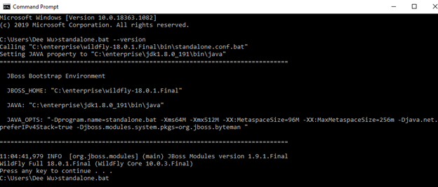 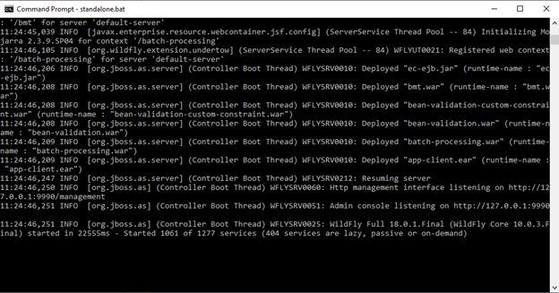
Set admin and user
Done 
Build and deploy applications by Maven
Install WildFly quickstart projects
Done
Testing helloworld project
Done 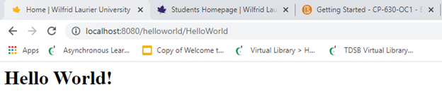
JBoss-AS Maven project on Eclipse JEE
Eclipse Maven and external JBoss
Done.
Run WildFly within Eclipse JEE
Done. 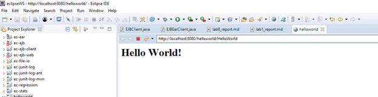
Undeploy: right click the helloworld object choose remove 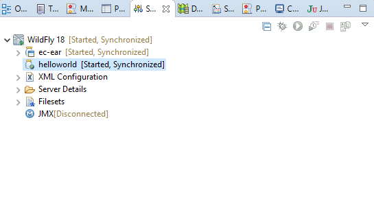
Hand-on EJB projects
Test ejb-remote project
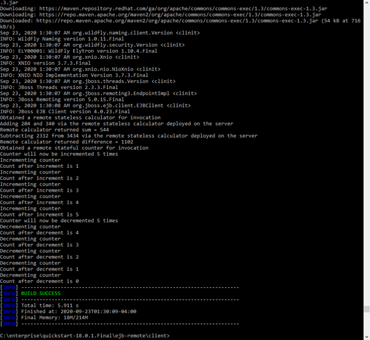Test ejb-remote project
Create EJB components
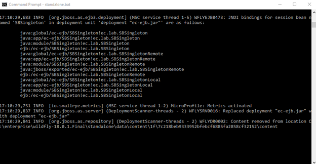Create EJB components
Client component
Eclipse 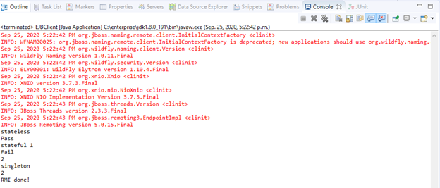
Command Console 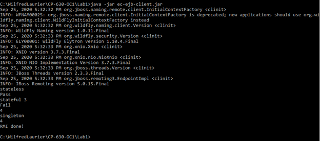
Hand-on Web component
Web component of Servlet
1.5.1.1 Web Component
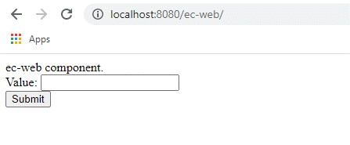Web Component
1.5.1.2 Deploy Management Console
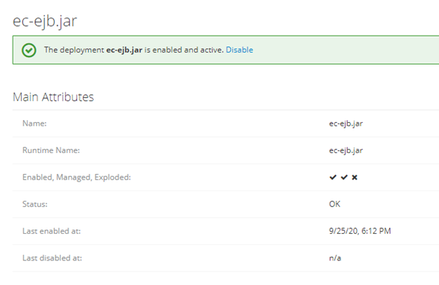Web Component
Web components using EJB
Done
EJB and Web Components deployment
1.5.3.1 EJB and Web Components deployment
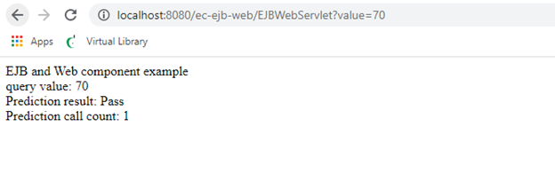EJB and Web Components deployment
1.5.3.2 Admin web console
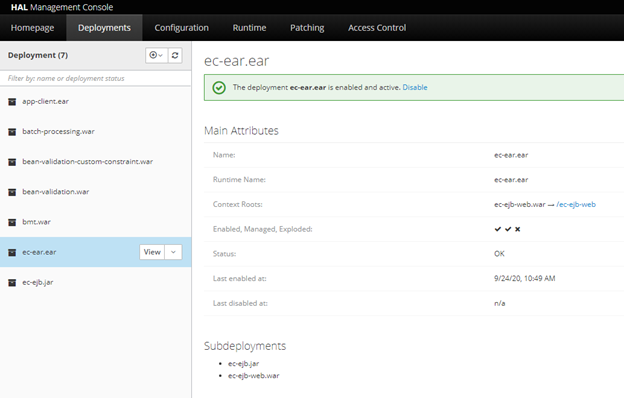EJB and Web Components deployment
1.5.3.3 ec-ejb-client
 EJB Ear Client
EJB Ear Client